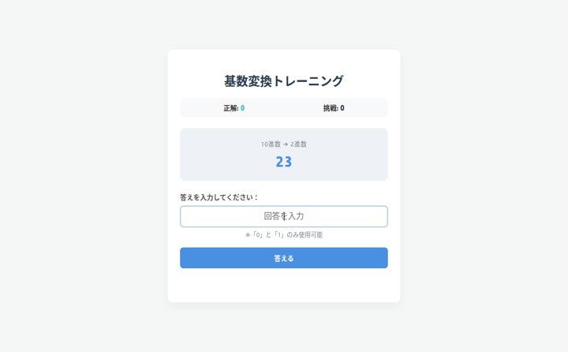
Number System
基数変換
進数変換の手順を繰り返し試しながら、数の表し方の違いを確認できる教材です。
各教材ページの公開内容をもとに、テーマがひと目で分かる説明文とサムネイルを追加しました。

進数変換の手順を繰り返し試しながら、数の表し方の違いを確認できる教材です。
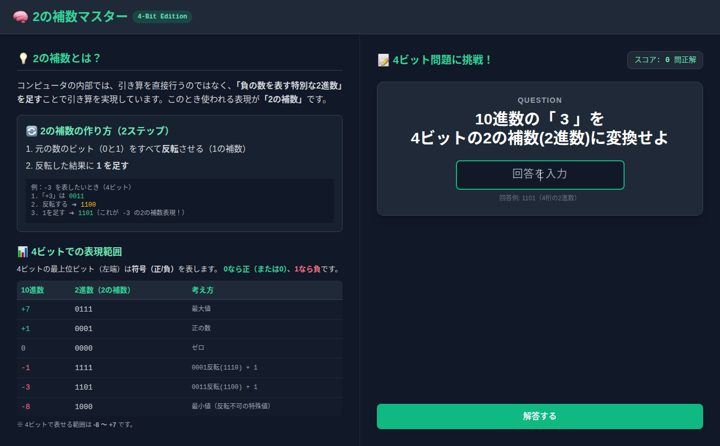
2の補数を使った負の数表現や減算の考え方を、操作しながら理解できる教材です。
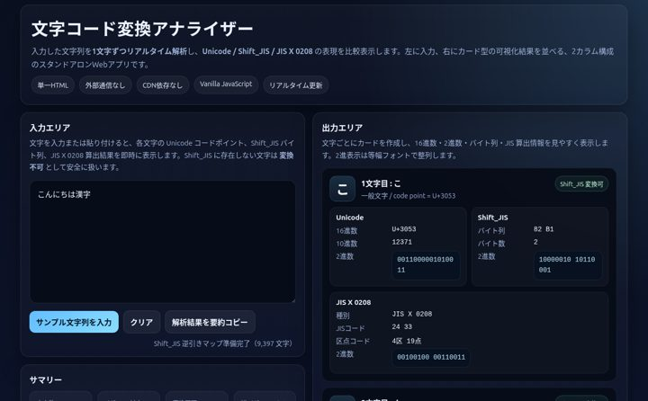
文字をコードへ変換しながら、UnicodeやShift_JISなどの違いを比較できる教材です。
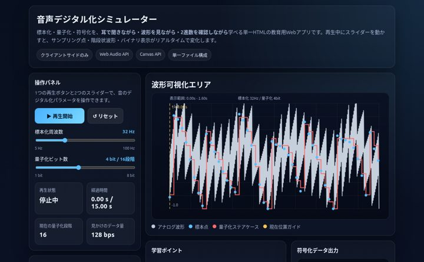
標本化・量子化・符号化を、波形と音を見比べながら学べる教材です。
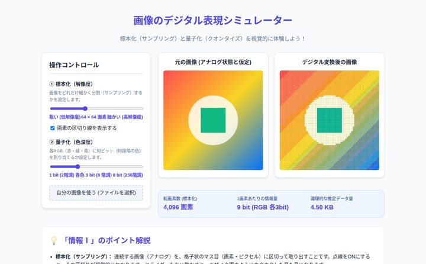
画像の標本化と量子化を操作し、見え方の変化を視覚的に学べる教材です。
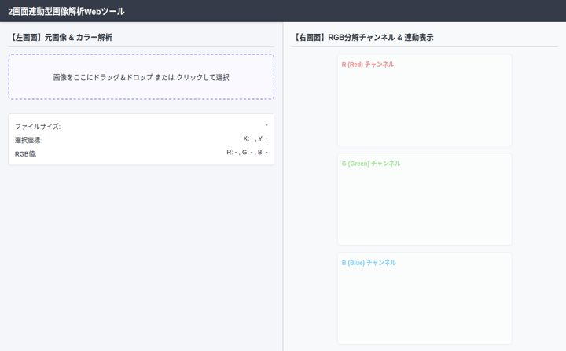
画像をRGB成分に分解して、色の仕組みを視覚的に理解できる教材です。
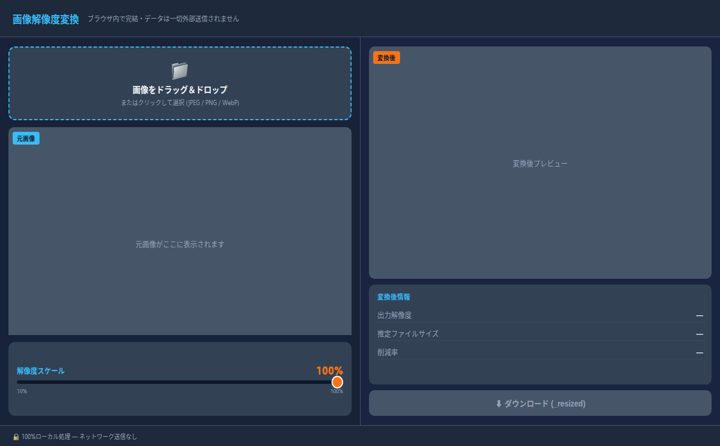
📁 画像をドラッグ＆ドロップ またはクリックして選択 (JPEG / PNG / WebP)
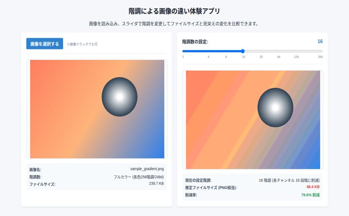
画像を選択する ※画像ドラッグでも可 画像名: samplegradient.png 階調数: フルカラー (各色256階調/24bit) ファイルサイズ:。
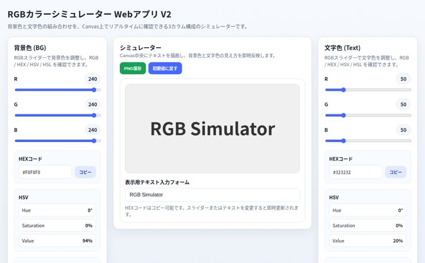
背景色 (BG) RGBスライダーで背景色を調整し、RGB / HEX / HSV / HSL を確認できます。 R 240 G 240 B 240 ###。
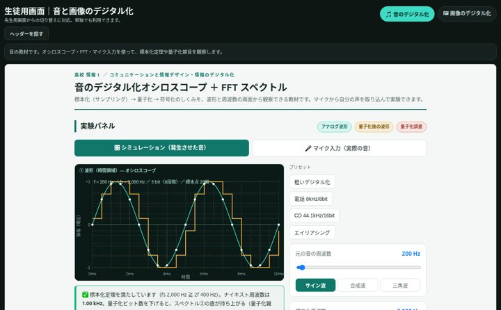
生徒用画面｜音と画像のデジタル化 先生用画面からの切り替えに対応。単独でも利用できます。 同じブラウザ内で先生用画面と一緒に開くと、先生用の切り替えボタンに。
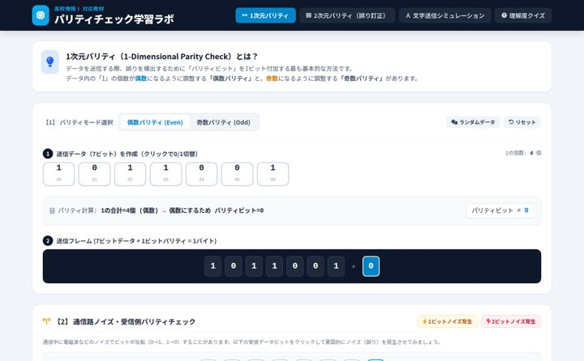
高校情報Ⅰ 対応教材 ## 1次元パリティ（1-Dimensional Parity Check）とは？ データを送信する際、誤りを検出するために「パリティ。
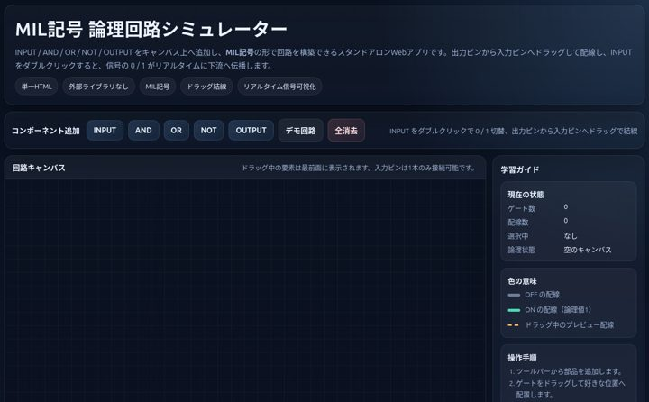
INPUT / AND / OR / NOT / OUTPUT をキャンバス上へ追加し、MIL記号の形で回路を構築できるスタンドアロンWebアプリです。出力。
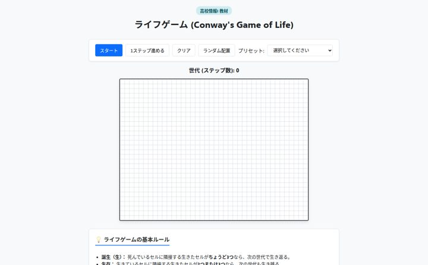
プリセット: 世代 (ステップ数): 0 ## 💡 ライフゲームの基本ルール * 誕生（生）： 死んでいるセルに隣接する生きたセルがちょうど3つなら、次の世。